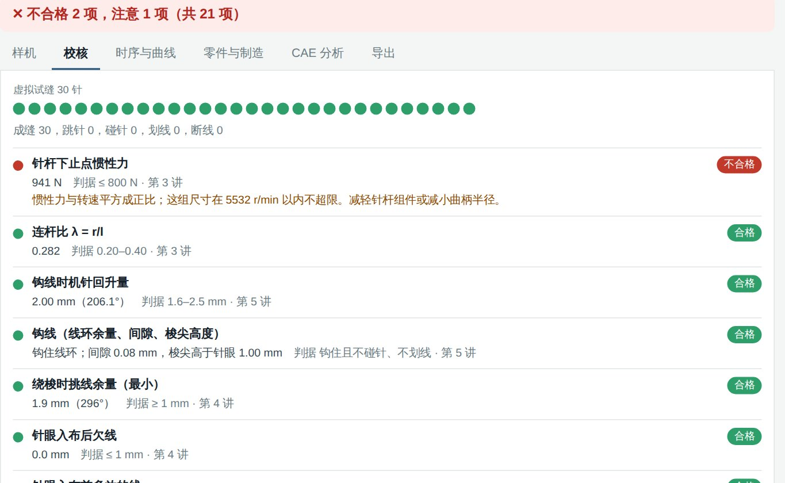
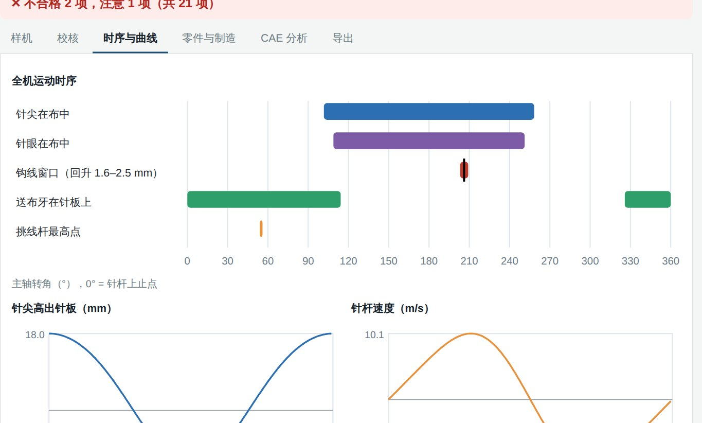
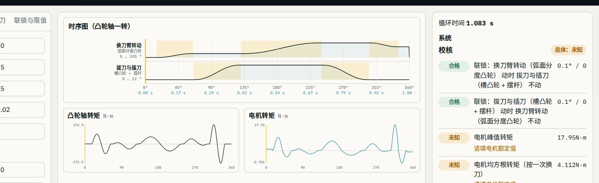
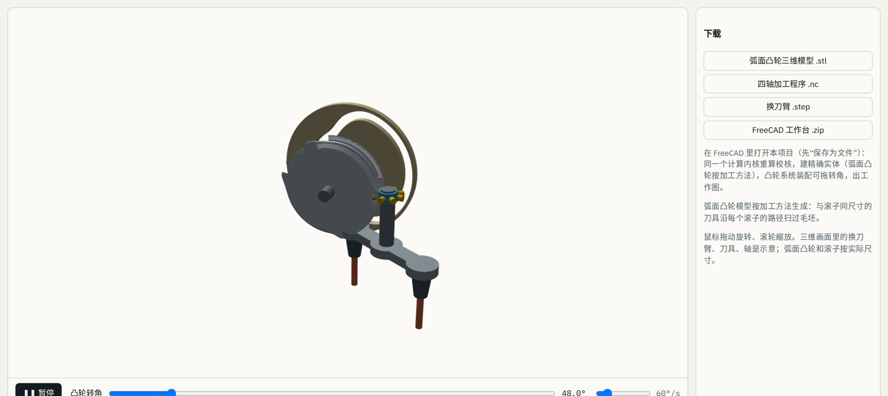

给老板、经理和工程师的一场分享
订单、库存、采购、质量和车间，共用一个开放底座。AI 起草文书，人来决定。
WenQuest Ops · Guoqing (Eddie) Zhang · 演示数据：虚构公司
开始之前
这一个小时
第 1 部分 · 时间去哪了
示意故事，虚构公司
第 1 部分 · 同样的事实，两种样子
第 1 部分 · 另外两个痛点
流程文件写一套，车间做另一套。记录事后可以被修改，签字也就证明不了什么。
面对分散的记录，AI 只能猜，谁也无法核对。它需要你自己互联的记录、带引用，还要有人负责。
第 2 部分 · 思路
点一层，看它做什么。
第 2 部分 · 工作规则
第 2 部分 · 每个模块都适用
合格、不合格、样本量和接收，全是普通代码，绝不用 AI。
用你自己的密码。批准的人不能是起草的人。
数据库拒绝修改或删除已签字的记录。
没有检验过批次的供应商没有比率，而不是 0%。
第 2 部分 · AI 原生，点一项工作
第 2 部分 · 与常见做法对比
| 常见做法 | WenQuest Ops |
|---|
第 2 部分 · 说白了
一个安装脚本。数据留在你手里。
分步课程教员工搭建并按需调整。
快递面单、电商订单、EDI，以托管服务提供。
第 3 部分 · 底座
一份物料目录、一份客户名单、一份供应商名单、一套会计科目表。
发出一张订单，库存和账同时变动，来自同一份单据。
销售、仓库和会计不再各管各的副本。
第 3 部分 · 底座
采用 GPLv3 许可，基于 Frappe 框架。自己托管时没有按用户收费的许可。
会计、库存、采购、销售、生产、项目、CRM、资产等，都在一个系统里。
角色权限、单据变更历史，以及每种单据类型的 REST 接口。
官方镜像，通过 API 对接。它的升级仍是它自己的升级。
第 3 部分 · 点一个模块
第 3 部分 · 销售
第 3 部分 · 采购
第 3 部分 · 会计 · 按顺序过账
第 3 部分 · 会计 · 来自你刚过账的分录
在上一页过账，这里就会更新。如果还没有过账，显示的就是已知的：什么都没有。
第 3 部分 · 库存
第 3 部分 · 库存 · 改改数字
第 3 部分 · 库存实务
第 3 部分 · 不止后台
物料清单（BOM）、生产工单、工序卡；消耗原材料，入库成品。
任务、工时表，以及按单生产业务的项目成本核算。
资产登记、折旧和维护计划。
线索、商机，以及首张订单之前的报价单。
WenQuest Ops 把已签字的生产记录，关联到同一批次的 ERPNext 生产工单。
第 4 部分 · 运营中枢 · 点一个环节
第 4 部分 · 运营中枢 · 试一试
只取上次运行之后有变化的单据；中断后从断点继续。
每次变化都是一个事件。整张图可以由事件重建，结果相同。
只有经人确认的草稿，才会写入 ERPNext。
第 4 部分 · 运营中枢 · 点一个对象
第 4 部分 · 运营中枢 · 切换订单
期内全部发完的订单中，最后一次发货日期不晚于承诺日期的比例。
库存金额 ÷（近 90 天已发货成本 ÷ 90）。
第 4 部分 · 车间屏幕
第 4 部分 · 随便点
第 4 部分 · 周二那个问题
第 4 部分 · 唯一的回路
第 4 部分 · 用日常语言提问
第 5 部分 · 运营 · 销售
第 5 部分 · 运营 · 采购
第 5 部分 · 运营 · 资金 · 切换访客模式
第 5 部分 · 运营 · 计划中
扫码收货、质量冻结、上架到指定位置。
按订单或按批次拣货，扫码防止拿错。
打包、承运商面单和物流跟踪，通过托管服务完成。
按位置盘点，差异经批准后再入账。
列入第二期计划；这里标为计划中，并非已可运行的软件。
第 5 部分 · 运营 · 计划中
运费、面单和物流单号，直接挂在发货单上。
网店订单进来就是待确认的销售订单。
给迁移期间仍保留 QuickBooks 的公司。
按地址计算税率，用在报价单和发票上。
订单、发货通知和发票通过 EDI 往来。
由你的系统调用；你的记录仍留在你的服务器上。
第 6 部分 · ISO 9001 与 ISO 13485
谁做什么、必填字段、谁签字、谁批准。
每个控制点都标明它对应的条款。
每项控制措施每天都对照实际记录检查。
第 6 部分 · 点一个红色或琥珀色的控制措施
第 6 部分 · 带一份报告走完流程
第 6 部分 · 输入读数，然后签字
第 6 部分 · 拖动过程
第 6 部分 · 我们的问题主要出在哪？
第 6 部分 · 为什么会发生？
第 6 部分 · 每一步可能出什么错？
第 6 部分 · 你的旧文件夹
第 6 部分 · 导入之后
第 6 部分 · 一份你从未有过的程序
第 6 部分 · 文件控制
第 7 部分 · 逐步记录器械历史
第 7 部分 · 供应商发来警告
第 7 部分 · 器械唯一标识
第 8 部分 · 迁入
第 8 部分 · 三坐标测量机和 3D 扫描仪
第 8 部分 · 设备发送，人来接收
第 9 部分 · 给工程师
| 底座 | ERPNext 官方镜像，不改动，只用 REST API |
| 运营中枢 | Python（FastAPI）和 PostgreSQL；增量同步，可断点续传 |
| 安装 | Docker Compose、自动 HTTPS、一个脚本；备份、恢复、升级 |
| 登录 | 自有账号、Microsoft 365 或 Google Workspace |
| 规则 | 数据库触发器拒绝修改已签字的记录和日志 |
| 判定代码 | 每次变更都检查：不得引入 AI 或网络库 |
第 9 部分 · 集成
POST /api/integration/v1/measurements
Authorization: Bearer wqo_…
{"inspection": "IQC-00005",
"readings": [{"sample": 1,
"characteristic": "Board thickness",
"value": 4.02}],
"equipment": "CAL-01"}
→ 202 {"status": "pending"}
测量值和生产步骤结果先进入收件箱，等人处理。
按提交顺序读取事件：批次放行或拒收、报告开立。
限定范围、可撤销、以哈希保存；每次调用都有记录。
第 9 部分 · 你的 IT 人员或 IT 服务商运行一条命令
站点、仓库、部门、角色、币种、时区。用电子表格填写，逐行检查。
用 Microsoft 365 或 Google 账号登录。备份、恢复、升级，以及供监控用的健康检查。我们每晚都在干净的机器上测试安装。
第 9 部分 · 双方都快速迭代
AI 辅助开发，每个变更一个经审查的拉取请求，每个变更都经过测试。
自首次提交以来已合并的拉取请求，累计数量（截至 10月17日）。
第 9 部分 · 谁做什么
第 9 部分 · 一条务实的路径
装在你的服务器上；把旧系统里的物料、客户、供应商和未结订单导进来。
通常是来料检验或不合格品；导入旧台账。
启用 ISO 套件，把红色磁贴逐个清零。
测量、设备、标签和扫码。
第 10 部分 · 愿景 · 第 1 / 4 · 愿景
第 10 部分 · 愿景 · 第 2 / 4 · 愿景
第 10 部分 · 愿景 · 第 3 / 4 · 愿景
第 10 部分 · 愿景 · 第 4 / 4 · 愿景
第 11 部分 · ERP 之外
五种机型，改一个参数，校核当场更新。
从运动要求一直到加工出来的凸轮。
一句话进去，一段工程级三维片出来。
给个题目或一段录音，就成一堂边讲边画的课。
第 11 部分 · 行业软件 · 已上线


第 11 部分 · 行业软件 · 已上线


第 11 部分 · 视频 · 已上线
第 11 部分 · 视频 · 已上线
谢谢
我们正在邀请少数试点公司。有问题吗？
联系：eddiezgq@gmail.com